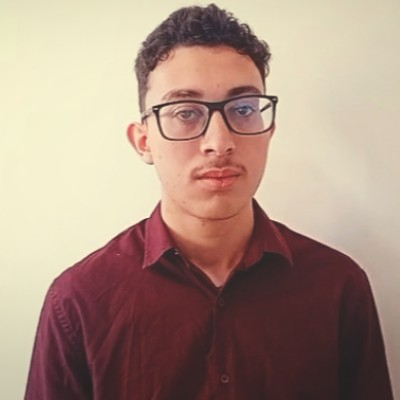

Técnico em Administração | CST em Gestão Comercial | Buscando primeira oportunidade no mercado
Busco minha primeira oportunidade no mercado de trabalho na área administrativa, onde possa aplicar meus conhecimentos técnicos em administração e contribuir com dedicação, organização e trabalho em equipe para o crescimento da empresa.
ETEC de Carapicuíba | 2023-2025
CertificadoFATEC Santana de Parnaíba | 2026-Presente
Auto Viação Urubupungá | Santana de Parnaíba – SP
Atuação na organização física de depósitos, conciliação de inventário e gestão de planilhas. Administração de recursos e materiais para a organização interna da empresa, controle de planilhas e conferência de produtos, visando obter experiência profissional nas operações da empresa.
Projetos desenvolvidos durante o curso técnico em Administração:
1º ano – ADM
Projetos desenvolvidos no primeiro ano do curso técnico em Administração.
Acessar2º ano – ADM
Projetos desenvolvidos no segundo ano do curso técnico em Administração.
Acessar3º ano – ADM
Projetos desenvolvidos no terceiro ano do curso técnico em Administração.
AcessarProjetos desenvolvidos durante o curso superior de Gestão Comercial:
2026 | Concluído
Trabalhos, pesquisas e atividades realizadas no primeiro semestre do curso.
Acessar projetos do 1º semestreParticipação no primeiro dia do evento acadêmico.
Participação no segundo dia do evento acadêmico.
Apresentação dos projetos do 1º semestre de Gestão Comercial. O portfólio do grupo e o website do projeto integrador estão disponíveis abaixo.
Reconhecimento nacional concedido a estudantes com desempenho de destaque na Olimpíada Brasileira de Matemática das Escolas Públicas. Classificado entre os participantes em nível estadual.
Lista oficial de premiados – SP
ComprovanteDestaque em desempenho em conhecimentos gerais e raciocínio interdisciplinar na Competição USP de Conhecimentos e Oportunidades.
Código de Autenticidade: EA087-49F8F-974F3-FBBC0
CertificadoParticipação especial no programa de Eletiva de Psicologia, discutindo temas como stress, ansiedade, depressão e áreas da psicologia com os alunos da escola.
Certificado2024-2025 | Líder de projeto (2025) e participante (2024) – organização de encontros, recrutamento, participação no Intercurso, Feira do Clube e estudos com o professor Robson.
Aprofundamento em aberturas, finais, análise de partidas com Lichess e Chess.com.
2023-2025 | Desenvolve raciocínio rápido e trabalho em equipe